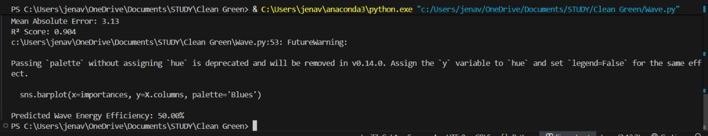

Renewable Energy Systems Portfolio
A Clean and Green Energy Course Submission
Student Profile & Course Submission
Vedant Jena
Institution: SRMIST, KTR
Registration Number: RA2311026010452
Program/Year: 3rd year B Tech CSE AI&ML
Section: AI1
Course Submission Details
Course: Clean and Green Energy
Assignment: Website Portfolio Submission
Submission Instructions Overview
This portfolio documents the solutions for three chosen design/application-oriented questions related to Renewable Energy Systems. Use the left navigation panel to view Activity 1, Activity 2, and Activity 3, each containing the system architecture and a detailed technical explanation.
Evaluation will focus on Website Design & Navigation, Completeness of Block Diagrams, Relevance & Quality of Explanation, and Originality.
🌊 Activity 1: Wave Energy Conversion System
Problem Statement
Coastal regions across the world face persistent energy challenges due to their dependence on fossil fuel-based electricity and limited access to centralized grids. Building traditional energy infrastructure in remote or island communities is costly and environmentally taxing. Meanwhile, the ocean provides a vast, predictable, and renewable energy source — wave energy — with high energy density (**2–3 kW/m²**). However, harnessing this resource effectively remains a challenge. Current wave energy technologies struggle with low efficiency (**25–40%**), high capital costs, vulnerability to storms, inconsistent power output, and complex maintenance in harsh marine environments. There is also difficulty in integrating the irregular wave energy output with existing power grids. Hence, there is a pressing need for a **compact, reliable, and cost-effective wave energy converter (WEC)** that can consistently generate clean electricity for coastal communities, withstand varying sea conditions, minimize environmental impact, and remain economically viable with minimal maintenance.
Proposed Solution
The proposed **Hybrid Wave Energy Conversion System** integrates multiple renewable and intelligent control technologies:
- **Multi-mode WEC** using point absorbers, oscillating water columns, and attenuators for maximum wave capture.
- **Hybrid integration** with solar and offshore wind energy, managed by a smart controller for stable power supply.
- **Advanced energy storage** with Li-ion batteries and supercapacitors for continuous electricity during low-wave periods.
- **Intelligent grid interface** featuring predictive monitoring and MPPT optimization to ensure efficient, grid-synchronized delivery.
System Block Diagram / Architecture

Fig 1. Multi-Mode Wave Energy Conversion System Architecture.
Explanation (195 Words)
- Source of Energy: The system harnesses the kinetic and potential energy from ocean waves, which are ultimately wind-driven. Wave energy is highly predictable and dense, with power ranging from **20-70 kW/m** of wave front. Near-shore positioning facilitates easier maintenance access while capturing significant power.
- Conversion Process: Waves drive the Wave Energy Converter's (WEC) floating buoys, generating mechanical motion. This motion activates hydraulic cylinders to pressurize fluid, which in turn drives a hydraulic motor connected to an electric generator. The variable AC output is then rectified and conditioned by power electronics. A smart controller integrates this power with inputs from co-located solar/wind systems, managing the load and charging the battery storage.
- Output/Utilization: The system provides **50-200 kW** of continuous baseload power, sufficient for **100-400** coastal homes. The modular design is scalable for larger applications. Excess energy is stored in battery banks for continuous supply during periods of low wave activity or at night.
- Real-world Application Relevance: This technology directly addresses energy poverty in remote island nations (e.g., Pacific Islands) and coastal villages. It reduces reliance on expensive diesel generators, leading to lower carbon emissions (**150-200** tons annually) and provides energy independence for communities vulnerable to climate change impacts and supply disruptions.
🌋 Activity 2: Geothermal Energy System
Problem Statement
Geothermal energy offers reliable, **24/7 baseload power** with capacity factors exceeding **90%**, unlike intermittent solar and wind sources. Yet, despite this advantage, geothermal expansion faces major technical and financial hurdles. Drilling geothermal wells (**1–3 km** deep) is extremely expensive (**$5–10 million per well**), and the underground resource quality is uncertain. There are also safety and environmental risks such as **induced seismicity** from fluid injection, **corrosion** from acidic geothermal fluids, and **reservoir depletion** from poor reinjection practices. Thus, the challenge is to create an **Enhanced Geothermal System (EGS)** that safely maximizes heat extraction, maintains reservoir sustainability, reduces seismic risks, and operates efficiently while keeping costs manageable.
Proposed Solution
The proposed **Enhanced Geothermal Power System** employs cutting-edge methods:
- **Binary-cycle EGS design** with closed-loop heat extraction using low-boiling fluids (isobutane, pentane).
- **Real-time seismic monitoring** using fiber-optic and microseismic sensors, with AI-based predictive analytics for early warnings.
- **Advanced heat exchange system** utilizing titanium plate exchangers for corrosion resistance and efficient heat transfer.
- **Sustainable water management** through complete reinjection of cooled geothermal brine to preserve reservoir pressure and prevent contamination.
System Block Diagram / Architecture

Fig 2. Enhanced Geothermal System (EGS) with Real-time Monitoring.
Explanation (198 Words)
- Source of Energy: The system utilizes the Earth's geothermal gradient, accessing hot rock formations **1-3 km** deep with temperatures of **150-350°C**. This heat is derived from radioactive decay and residual planetary heat. Enhanced Geothermal Systems (EGS) hydraulically stimulate hot dry rock to create artificial, man-made reservoirs.
- Conversion Process: Cold water is injected into the fractured hot rock and circulated to absorb thermal energy, returning to the surface via a production well at **150-250°C**. The Binary Cycle transfers this heat to a working fluid (e.g., isobutane) with a lower boiling point, which vaporizes and drives a turbine/generator. The cooled geothermal brine is completely reinjected into the Earth, ensuring reservoir sustainability. Real-time seismic monitoring is used to regulate pressure and prevent induced seismicity.
- Output/Utilization: The plant generates **5-50 MW** of continuous baseload electricity, boasting a capacity factor exceeding **90%**. The stability of the output makes it a reliable source. Additionally, waste heat from the cooling system can be repurposed for industrial processes or district heating via a Combined Heat and Power (CHP) setup.
- Real-world Application Relevance: Geothermal provides stable, weather-independent power crucial for industrial facilities and communities in geologically suitable areas (e.g., Iceland, Western USA). The inclusion of real-time monitoring addresses public safety concerns regarding induced seismicity, while the closed-loop system prevents environmental contamination, enabling socially acceptable, long-term power generation.
🌿 Activity 3: Biomass Energy System
Problem Statement
Every year, agriculture and forestry produce massive amounts of organic waste — crop residues, animal manure, and wood by-products. In many regions, particularly developing countries like India, over **140 million tons** of crop residue is burned openly, causing severe **air pollution**, respiratory diseases, and greenhouse gas emissions. Conventional biomass combustion systems are inefficient (**15–25%**) and release toxic gases due to incomplete burning. They also face operational challenges like inconsistent feedstock quality, high preprocessing costs, corrosion, and emission control failures that prevent compliance with environmental standards. The main challenge lies in designing a biomass power generation system that can **efficiently process diverse waste materials**, ensure complete combustion or gasification, **meet modern emission standards**, utilize byproducts effectively, and remain economically sustainable for rural agricultural areas.
Proposed Solution
The proposed **Advanced Biomass Gasification and Power System** includes:
- **Dual-stage gasifier** (**700–1000 °C**) for high-quality syngas production (**CO, H2, CH4**).
- **Comprehensive preprocessing** — size reduction, drying, and pelletization for uniform fuel feed.
- **Multi-layer emission control** with cyclone separators, filters, scrubbers, and activated carbon units ensuring **99.5%+ particulate removal**.
- **Energy recovery & byproduct utilization**, including combined heat and power (**CHP**) units achieving **75–85% efficiency** and converting ash into fertilizer or construction material.
System Block Diagram / Architecture

Fig 3. Integrated Biomass Gasification and Energy Recovery System.
Explanation (199 Words)
- Source of Energy: The system utilizes diverse organic waste, including agricultural residues (e.g., rice husks, straw), forestry waste, and animal manure. The energy, stored from sunlight via photosynthesis, has a density of **15-19 MJ/kg** (dry). Since the **CO2** released during conversion equals the **CO2** absorbed during plant growth, the system operates on a climate-neutral carbon cycle.
- Conversion Process: Pre-processed biomass enters an advanced gasification chamber. Controlled partial oxidation at **700-1000°C** converts the solid material into combustible syngas (**CO, H2, CH4**). This syngas is cleaned via multi-stage filtration to remove particulates, tars, and acid gases. The clean syngas fuels a high-efficiency gas turbine or engine connected to a generator. Exhaust heat is subsequently recovered via heat exchangers for process applications.
- Output/Utilization: The facility generates **5-50 MW** of electrical power, achieving a capacity factor of **70-85%**. The Combined Heat and Power (CHP) configuration provides an additional **10-30 MW** of thermal energy for heating. Ash and other residues are processed for beneficial reuse as agricultural fertilizer or construction material, supporting a circular economy.
- Real-world Application Relevance: This technology addresses the critical problem of waste management, such as the open burning of crop residue in agricultural regions (e.g., India), which causes severe air pollution. By converting waste into energy, it provides a stable power source, income generation (waste valorization) for farmers, local employment, and significant air quality improvement, supporting sustainable rural development.
🧠 Activity 4: Predictive ML Model for Renewable Energy Efficiency
Project Focus: Utilizing Artificial Intelligence and Machine Learning (AI/ML) to predict the efficiency and suitability of Wave, Geothermal, and Biomass energy systems using synthetic datasets.
View the full code and detailed analysis on GitHub: https://github.com/VEDgit2005/CleanGreenML
Model Overview & Methodology
As AI/ML students, we developed a regression model (likely **XGBoost or Random Forest**) to explore how various environmental and operational parameters influence the energy efficiency of different clean energy sources. We used a **synthetic dataset** designed to reflect realistic conditions for Wave, Geothermal, and Biomass systems. The goal was to identify the most **important features** driving efficiency and suitability for predictive operational planning.
Key Results and Feature Analysis
1. Geothermal Potential & Suitability
Fig 4. Feature Importance for Geothermal Suitability.
3D Visualization Image Removed per Request
Fig 5. 3D Geothermal Potential Visualization (Temp, Heat Flow, Pressure).
Fig 6. 2D Geothermal Site Suitability Visualization (Heat Flow vs. Temp).
The feature importance plot (Fig 4) highlights **Temperature** and **Depth** as the dominant factors in determining geothermal potential. The 3D and 2D visualizations (Fig 5, 6) show clear clustering, indicating that higher temperatures and heat flows correlate strongly with **Suitable** sites (blue/dark clusters), confirming the geological constraints of this energy source.
2. Wave Energy Efficiency Prediction
Fig 7. Feature Importance for Wave Energy Efficiency.
ML Model Output Snippet
.jpeg)
Wave Efficiency Prediction Example
The Wave Energy model analysis (Fig 7) shows that **Device Efficiency** itself is the overwhelmingly most important model achie feature, followed by factors like Wave Height and Temperature. Theved a high **R2 Score** of **0.904** and a low Mean Absolute Error (MAE) of **3.13**, indicating strong predictive capability for energy output under specific wave conditions. A sample prediction shows **50.00%** efficiency.
3. Biomass Efficiency Prediction
Fig 8. Feature Importance for Biomass Efficiency.
Fig 9. Actual vs Predicted Biomass Efficiency Scatter Plot.
ML Model Output Snippet
The biomass feature importance (Fig 8) shows that the chemical composition of the feedstock is key, with **Ash Percentage**, **Fixed Carbon**, and **Heating Value** having the highest impact on predicted efficiency. The scatter plot (Fig 9) demonstrates a good correlation between predicted and actual efficiency (close to the red y=x line), with an **R2 Score** of **0.843** and an MAE of **3.57**. A sample prediction shows a **60.00%** efficiency.